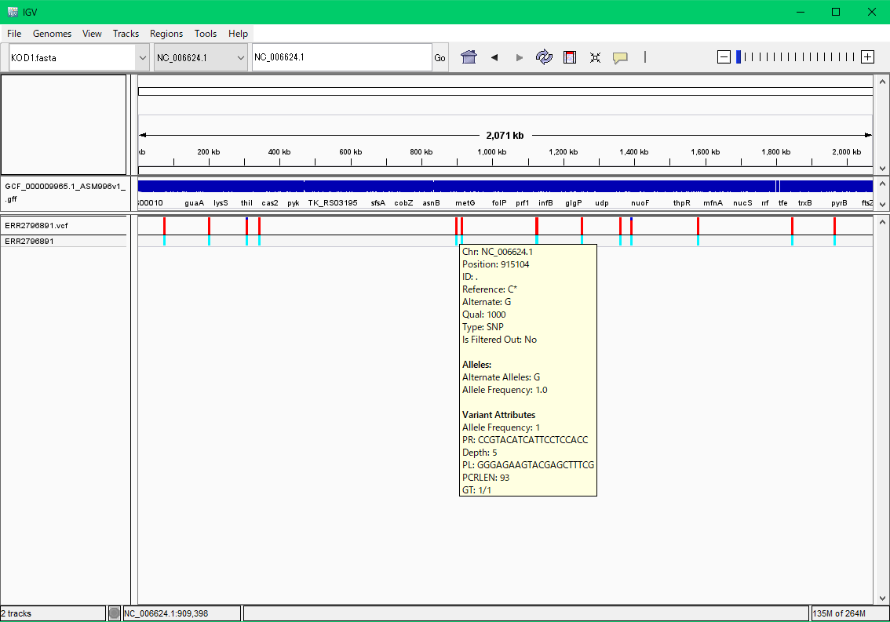
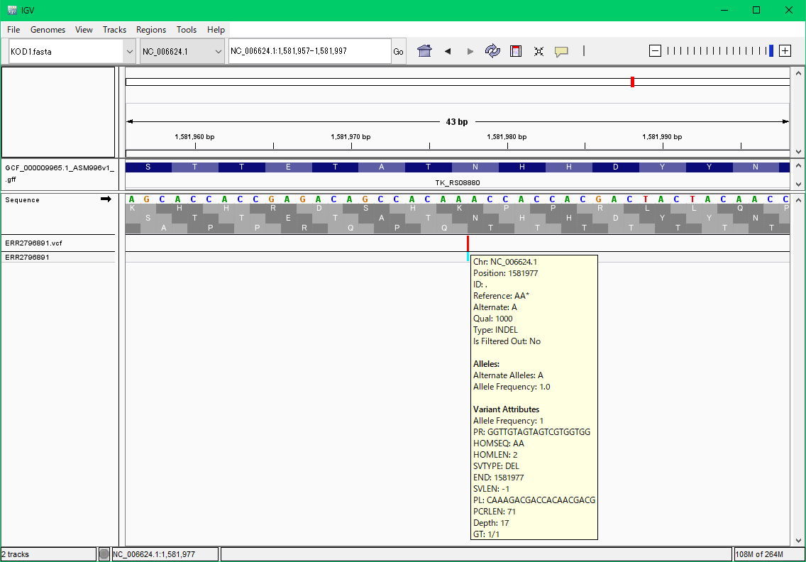

|   |
|
$ sudo apt update $ sudo apt install curl $ sudo apt install git $ sudo apt install sra-toolkit $ git clone https://github.com/akiomiyao/ped.git
$ cd ped $ git pull $ perl download.pl accession=ERR2796891git pullで最新のスクリプトに更新されます。git pullは毎回行う必要はありませんが、プログラムが更新されている場合はpullしてください。
$ perl check_length.pl target=ERR2796891 前半略 90 244 91 262 92 357 93 496 94 688 95 1034 96 1509 97 2035 98 3119 99 4317 100 22298 101 156098この場合は、101塩基が最長で、100塩基もそこそこあるので、clipping=100で計算します。
$ perl ped.pl target=ERR2796891,ref=KOD1,clipping=100高度好熱菌の参照配列は設定済みなので自動的にダウンロードして解析用データを作成して一連の作業が自動的に進みます。
$ sudo apt install docker $ sudo apt install docker.io
$ sudo docker pull akiomiyao/ped上記のコマンドをコピーしてターミナルウインドウにペーストして実行してください。
$ sudo docker run -w /ped -v `pwd`:/work akiomiyao/ped perl download.pl accession=ERR2796891,wd=/work $ sudo docker run -w /ped -v `pwd`:/work akiomiyao/ped perl check_length.pl target=ERR2796891,wd=/work $ sudo docker run -w /ped -v `pwd`:/work akiomiyao/ped perl ped.pl target=ERR2796891,ref=KOD1,clipping=100,wd=/work